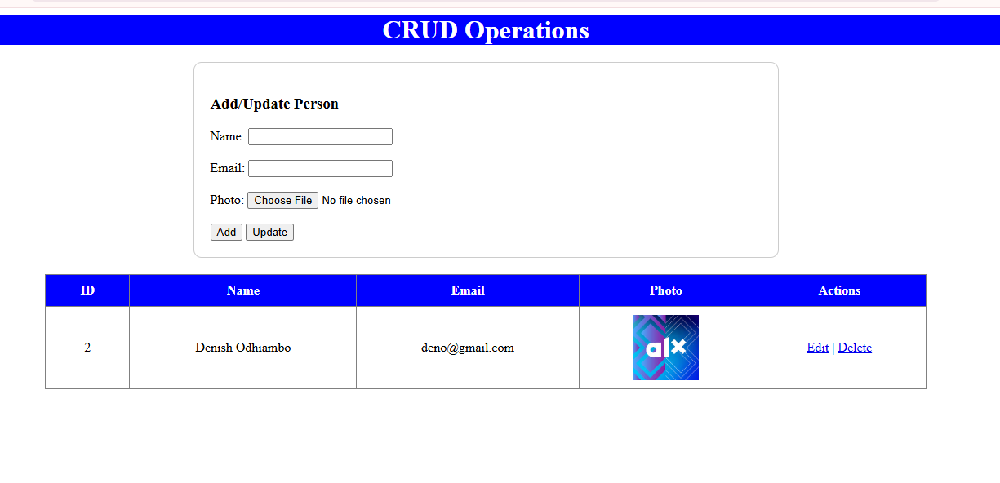
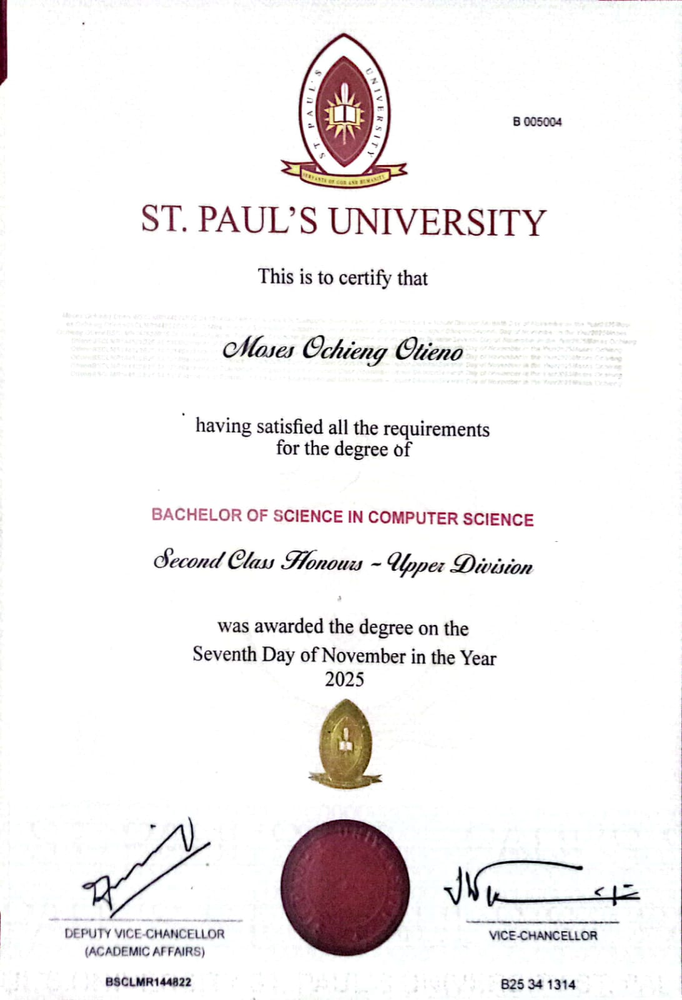
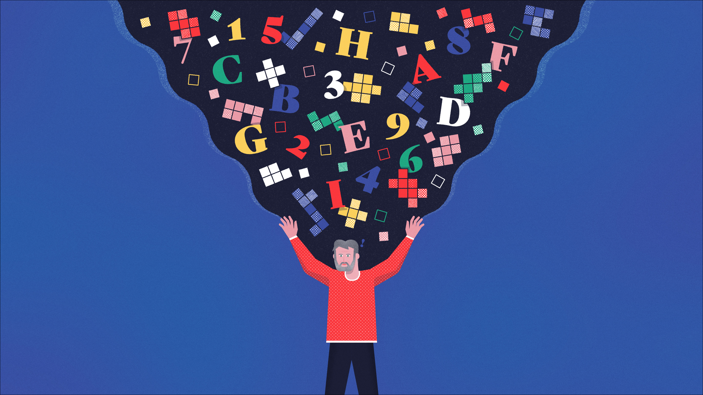
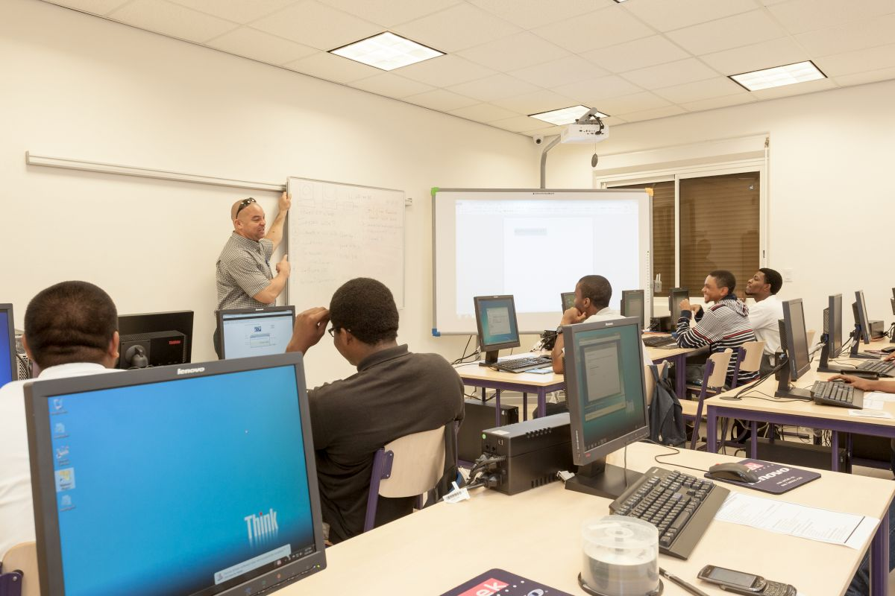

I am a passionate and dedicated Fullstack developer with a flair for creating seamless and user-friendly web experiences.
With a strong foundation in HTML, CSS, and JavaScript as Front-end and PHP (Laravel framework) for Back-end, I bring digital designs to life, turning visions into interactive, visually appealing websites and web applications.
I possess a diverse skill set, including technical skills related to web development.
Descriptors such as hardworking, faithful, passionate, self-motivated, confident, and self-driven
characterize my personality and work ethic. My educational background and active participation in
voluntary activities demonstrate my commitment to personal and professional growth.
...
I'm a self-motivated software developer with advanced skills in software development and a strong
understanding of current computer technology. I'm an experienced clerk with exceptional typing
and data entry abilities, characterized by a results-driven nature.
I did worked as an attachee at Kenay Ports Authority under the Inland Container Deport Nairobi where i perfomed various ICT tasks Which includes, CATOS SAP installations and Even printer Configurations, i did too managed to configure Outlook inbox failures.
My experience as a clerk volunteer at IEBC reflects my commitment to delivering quality service
and my proficiency in various tasks such as data entry and document management. I'm fluent in
both English and Swahili, and my interests in reading, music, and research demonstrate a
well-rounded and curious personality.
🚀 Upcoming Activity 🚀
I am currently and actively Looking for an internship or other job opportunity that prevails .
My goal is to apply skills gained to real-world challenges while gaining new insights in an industrial setup. I’m passionate about contributing to impactful projects and growing my expertise.
I am a highly self-motivated and goal-oriented software developer with an in-depth understanding of current computer technology. My skill set extends beyond conventional software development to include system analysis and design. I take pride in my advanced proficiency, allowing me to conceptualize, design, and implement intricate systems with precision and efficiency.
...
I am a highly self-motivated and goal-oriented software developer with an in-depth understanding of current computer technology. My skill set extends beyond conventional software development to include system analysis and design. I take pride in my advanced proficiency, allowing me to conceptualize, design, and implement intricate systems with precision and efficiency.
My deep knowledge spans across multiple languages and frameworks such as JavaScript, PHP, and Python, and I am capable of designing both the back-end and front-end of sophisticated web applications. My problem-solving skills allow me to take complex issues and break them down into manageable tasks to meet the needs of the project and client. Moreover, I am committed to keeping up with the latest industry trends and continuously improving my skill set.
Graphic Design
I am an exceptionally skilled and versatile graphic designer, proficient in a diverse array of design tools and software. I bring a creative flair and innovative mindset to my work, aiming not just to design but to create visually striking and effective solutions.
...
I am an exceptionally skilled and versatile graphic designer, proficient in a diverse array of design tools and software. I bring a creative flair and innovative mindset to my work, aiming not just to design but to create visually striking and effective solutions.
With experience in both print and digital media, I am equipped to handle various design projects, from logos and brand identity to complex web interfaces and illustrations. I focus on understanding client needs, blending creativity with functionality, and delivering impactful designs that resonate with the target audience.
Digital Marketing
As a highly accomplished digital marketer, I am distinguished by my adeptness in content marketing and social media strategy. I am proficient in creating narratives that resonate with target audiences, fostering brand loyalty and interest.
...
As a highly accomplished digital marketer, I am distinguished by my adeptness in content marketing and social media strategy. I am proficient in creating narratives that resonate with target audiences, fostering brand loyalty and interest.
My expertise also extends to SEO optimization, paid advertising, and email marketing strategies. I am adept at measuring campaign performance, optimizing strategies, and implementing actionable insights to achieve business goals.
Latest Projects
Primary Landing Page
Check it out
Explore my primary school page project and check out the source code on GitHub.
WhatsApp Contact Linking
WhatsApp Contact Linking
I am dedicated to pushing the boundaries of what's possible in front-end development. Explore my work on GitHub.
Sign In
Sign In
Explore my login page project and check out the source code on GitHub.
Sign Up
Sign Up
Explore my sign-up page project and check out the source code on GitHub.
CRUD

CRUD
Learn how to create view, edit and delete items in PHP, JS AND SQL
Certifications
Showcasing my achievements and continuous learning.
Bachelor of Computer Science (4-Year Degree)

I completed my four-year Bachelor’s degree in Computer Science at St. Paul’s University, Nairobi, Kenya. The program provided a strong foundation in programming, data structures, algorithms, databases, and software engineering, with an emphasis on practical problem-solving, teamwork, and real-world application of computing technologies.
Institution:** St. Paul’s University, Nairobi, Kenya Status:** Completed Duration:** 02/09/2021 to 20/04/2025
Through the Artificial Intelligence Essentials certificate, I gained a solid understanding of foundational AI concepts and their real-world applications. I learned how AI technologies like machine learning and natural language processing can be applied to solve complex problems efficiently. Additionally, I developed insights into the ethical considerations and societal impact of AI, equipping me to approach AI projects responsibly.
Gained a strong foundation in core subjects such as Mathematics, Science, and English. It helped me develop critical thinking, problem-solving skills, and a disciplined approach to learning. Additionally, it prepared me for secondary education by fostering a well-rounded understanding of academics and personal development..
Acquired comprehensive knowledge across various subjects, including Sciences, Humanities, and Languages. It enhanced my analytical, problem-solving, and communication skills, preparing me for higher education and career opportunities. Additionally, it instilled discipline, resilience, and the ability to adapt to diverse academic and real-life challenges.
The Kenya Certificate of Secondary Education (KCSE) was accompanied by a glowing recommendation from the Deputy Principal, acknowledging exceptional discipline, dedication, and academic performance. The recommendation emphasized a consistent work ethic, strong time management skills, and the ability to effectively balance academic and extracurricular commitments. It also highlighted leadership qualities and a positive influence on the school community, reflecting a high standard of personal and professional conduct.
An overview of my academic and professional journey.
St. Paul's University
Location: Nairobi, Kenya
St. Paul’s University is recognized for its cutting-edge programs in technology, with a focus on fostering creativity and technical expertise in software development.
Graduated April 20th 2025
Pursued a degree in Computer Science with an emphasis on developing software solutions and enhancing technical skills.
Mariwa High School
Location: Migori Kenya
Mariwa High School is known for its strong academic framework, offering a holistic education that emphasizes discipline, critical thinking, and leadership skills.
Years Attended: 2016 - 2020
Graduated with the Kenya Certificate of Secondary Education (KCSE), having excelled in both academics and personal development.
Kakwara Primary School
Location: Migori Kenya
At Kakwara Primary School, the focus is on building a strong academic foundation, preparing students for secondary education with a well-rounded curriculum.
Years Attended: 2006 - 2015
Graduated with the Kenya Certificate of Primary Education (KCPE), with a solid foundation in essential subjects and skills for future success.
ALX Online Course
Location: Online
ALX offers world-class online courses that aim to upskill professionals in the fields of AI, cybersecurity, and data science, preparing them for the challenges of the digital age.
Course Duration: March 2024 - July 2024
Completed the Artificial Intelligence Essentials course, gaining valuable insights into the fundamentals of AI and its applications in the modern world.
Hobbies
What I love doing in my free time.
Coding
Building software and experimenting with new technologies. It’s my way to solve problems and learn every day.
**Duration:** 3+ years

Solving Puzzles
Exploring ways of solving problems through mind blowing puzzles
**Duration:** 4+ years
Reading
Diving into books about technology, innovation, and self-improvement fuels my growth.
**Duration:** Lifelong passion
Other Technical Skills
Home Computer Basics Tutor
Assisting individuals with fundamental computer skills and software usage for personal or professional purposes.
Software Installations Assistant
Helping clients install and configure various software applications on their computers or devices.
Software Upgrades
Assisting with updating and upgrading software to ensure systems stay current and secure.
Virtual Assistant
Providing remote administrative support, handling tasks like scheduling, email management, and more.
Online Conferences Assistant
Providing technical support and assistance during online conferences, ensuring smooth operations.

IT Basics Assistant
Helping individuals with foundational IT skills, including troubleshooting and using essential hardware/software.
Referees
Trusted professionals who can vouch for my work and character.